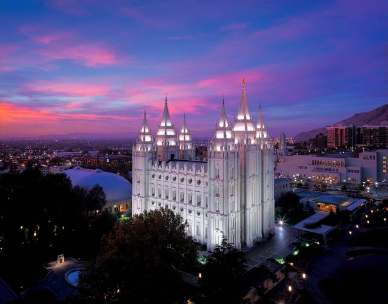
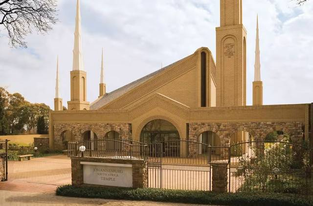
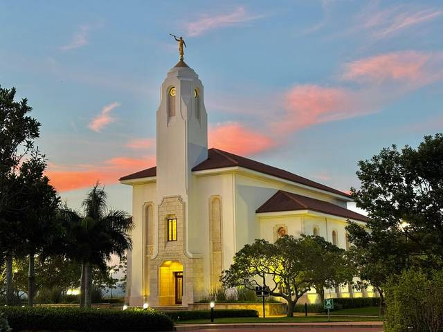
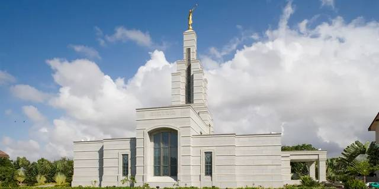
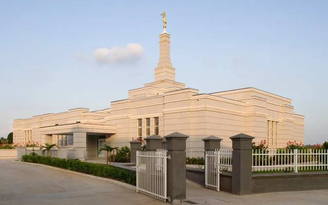
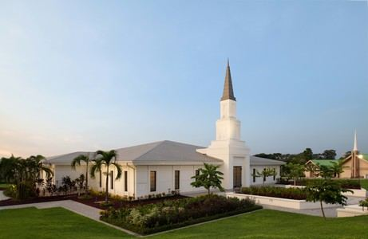
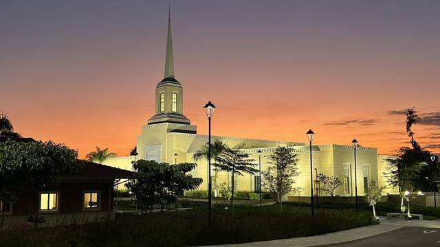

Temple Album
☰
Home
Old
New
Large
Small
Temple Album

Salt Lake Temple
Cape Town South Africa Temple

Johannesburg South Africa Temple

Durban South Africa Temple

Accra Ghana Temple

Aba Nigeria Temple
Lagos Nigeria Temple

Kinshasa DR Congo Temple

Harare Zimbabwe Temple